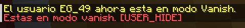

⚠ Esto solo aplica en el servidor de Conterstine ⚠
Para poder entrar al servidor o estar en este sin que nuestra precensia sea detectada usamos este plugin, en el servidor contamos con un plugin de vanish toggleable, es decir que cada vez que ejecutemos el comando pasaremos de vanish a normal
Al entrar en este modo nadie nos podrá ver, pasaremos a ser invisibles para tanto como mobs como jugadores y no podremos interactuar con cosas como agarrar objetos, usaremos esta herramienta para detectar a alguna persona que no sigue las reglas del servidor
Sintaxis de comandos:
/vanish TOGGLE
Cambiar nuestro estado de visible a vanish y viceversa

/vanish STATUS
Saber en que estado del vanish nos encontramos
Cabe destacar que en el tab tendremos el icono de un avión alado de nuestro nombre lo que indicaría que estamos en modo vanish

Para poder saber en que estado en cuanto a tps(ticks per second) está el servidor, ya que según los tps que tenga el servidor este estaría lageado vamos a usar el siguiente comando
/tps
Nos muestra los tps del servidor en tiempo real